📖 设定集 · F2设定集
F2 图版 · 魔法森林与森林旅人
F2 官方设定集图版 · p062–p073 · p074–p087
5
本卷页数
🎨
设定集
中/英
双语
🖼️ F2 官方设定集 · 原书图版
F2 图版 · 魔法森林与森林旅人
《The Art of Frozen II》（Jessica Julius, Chronicle Books 2019） p062–p073 · p074–p087
19
图版
p062–p073 · p074–p087
原书页码
原书
扫描原图
笔记
逐页图注
🌫️ Part Two「Air」的起始与 Enchanted Forest 章节：雾之穹顶内的石碑、树种与植被参考；随后是马蒂亚斯将军、沉船残骸与阿格纳·伊杜娜王室的设定页。
🌲 Enchanted Forest · 森林场景（p062–p073）

Part Two 起始插图（章节待考）
Elsa 站在山顶远眺魔法森林全景——秋季黄昏，粉紫天空、远山、河流、红叶。（F2设定集原页）

"Part Two — Air" 章节起始页
Part Two "气"章节开篇；元素精灵（Wind Spirit、Water Spirit、Fire Spirit、Earth Giants）的设计有模糊界限：到底是角色还是环境？要从环境中吸取灵感，让它们看起来就是由对应元素（气/水/火/土）构成；同时要做出有情感表演的角色；动画、特效、look dev、设计、建模（F2设定集原页）
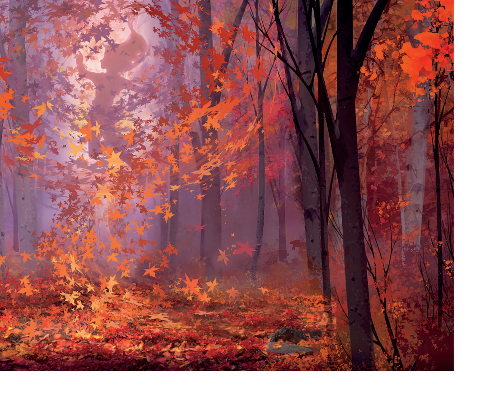
"Enchanted Forest" 章节内页（场景概念图）
魔法森林林间空地，秋季落叶与光雾的诗意画面。（F2设定集原页）

"Enchanted Forest" 章节内页（峡谷场景 + 访谈）
在 CG 中让有机环境显得有吸引力很难；森林可能看着像沙拉碗——元素好看但没设计结构；树可以从一面设计得很美，但镜头绕到 3D 物体时如何保持造型语言？通过精心摆放单棵树的枝丫与树冠，再组合成群，形成节奏与组织，避免凌乱；虽非建筑感，但有结构——观众未必注意到，但能感受到。（F2设定集原页）

Enchanted Forest 章节（森林分层构图）
魔法森林采用分层图层（前景植被/中景桦树/远景树）实现视差与立体感；图中可见两位微小人物作为比例尺。（F2设定集原页）
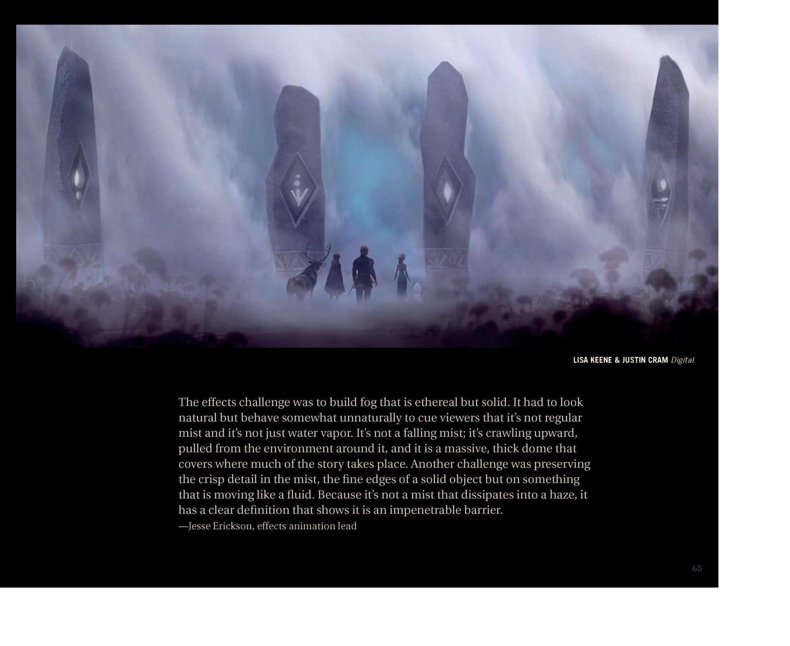
"Enchanted Forest" 章节内页（雾穹内部 + 石碑）
特效挑战：要做出"飘渺又坚固"的雾；看起来自然但行为反常以提示观众这不是普通雾气/水蒸气；雾不在下落，而是从环境中被抽起向上爬，形成厚重的穹顶覆盖故事发生的区域；另一挑战：保持雾中锐利的细节——固体般清晰的边缘却以流体方式运动；它不消散为薄雾，而以清晰的轮廓表明这是一道不可逾越的屏障。（F2设定集原页）

"Enchanted Forest" 章节内页（更多树木种类参考）
团队咨询挪威植物学家，按地区选择有限的树种与植被作为拼图块；用它们设计小景，将它们堆叠成树岛，从多角度都美观；然后复制、旋转、层次叠加，构成浩瀚森林。（F2设定集原页）
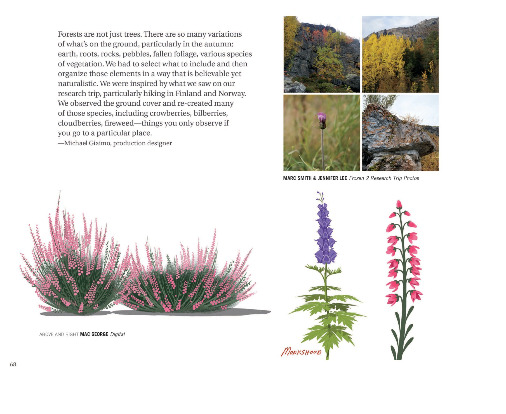
"Enchanted Forest" 章节内页（地面植被与研究照）
森林不只是树——地面有土、根、岩石、卵石、落叶、各种植被；要选择并合理组织；灵感来自芬兰/挪威考察；重现了越橘、欧洲越桔、云莓、柳兰等地被植物（"亲临其地才能观察到的植物"）；附子（Monkshood）作为具体物种绘制。（F2设定集原页）

Enchanted Forest 章节（植物/林下植被参考）
当归属（Angelica）植物设定与秋季蕨类参考——森林林下层的关键植被细节。（F2设定集原页）
⚔️ Mattias · Shipwreck · 王室（p074–p087）

Mattias 章节（人物设定）
Mattias 军装基于 Arendelle 卫兵制服——配色/材质/纹样与 Arendelle 一脉相承；为凸显地位，他外套更短、加肩章与披风；他在魔法森林多年但仍认真负责、严谨维护制服。（F2设定集原页）
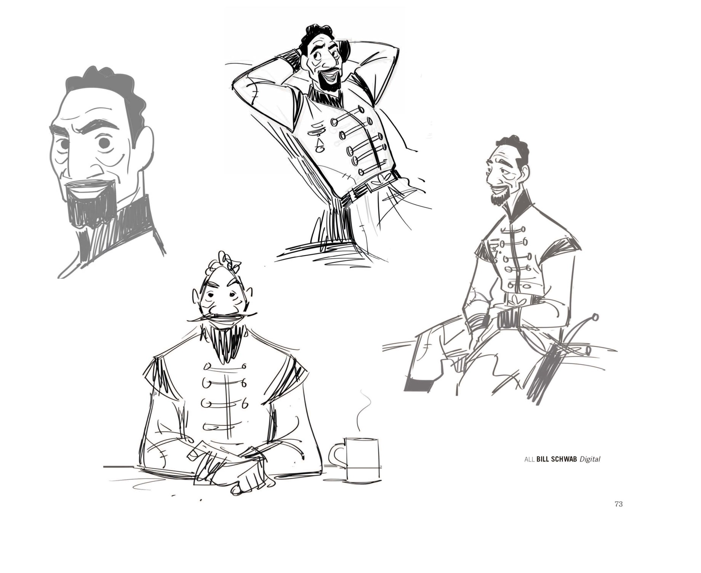
"Mattias" 角色内页（表情/动作草图）
Mattias 不同情绪/动作的姿态研究：惊讶、放松大笑、盘坐喝茶、侧坐微笑。（F2设定集原页）
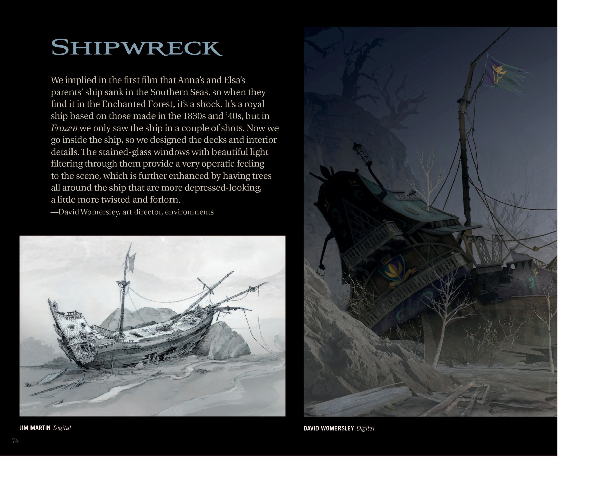
"Shipwreck" 章节起始页
第一部暗示 Anna、Elsa 父母船沉于南海，当他们在魔法森林找到时令人震惊；这是一艘基于 1830-40 年代皇家船设计的大船；第一部只有几个镜头；本作会进入船内，设计了甲板与内饰；彩色玻璃窗让光透入，赋予歌剧般的氛围；周围树木更"抑郁"——更扭曲、凄凉。（F2设定集原页）
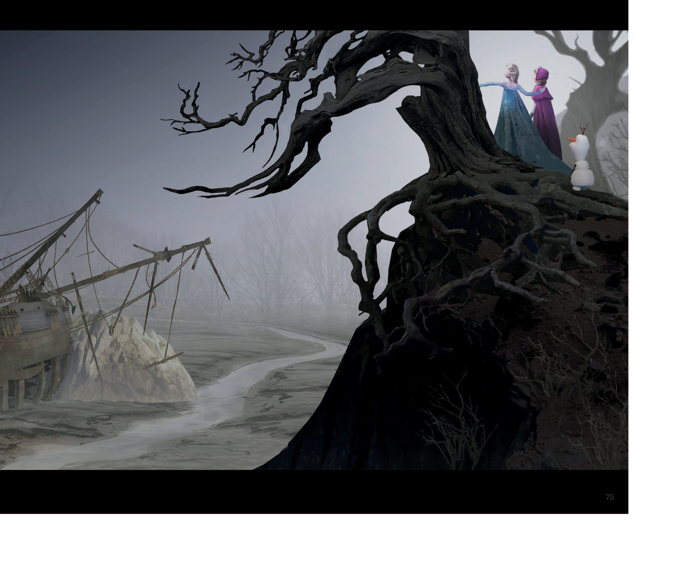
"Shipwreck" 章节内页（场景彩图）
沉船场景：Elsa、Anna 与 Olaf 在扭曲枯树上发现父母沉船的戏剧性时刻。（F2设定集原页）
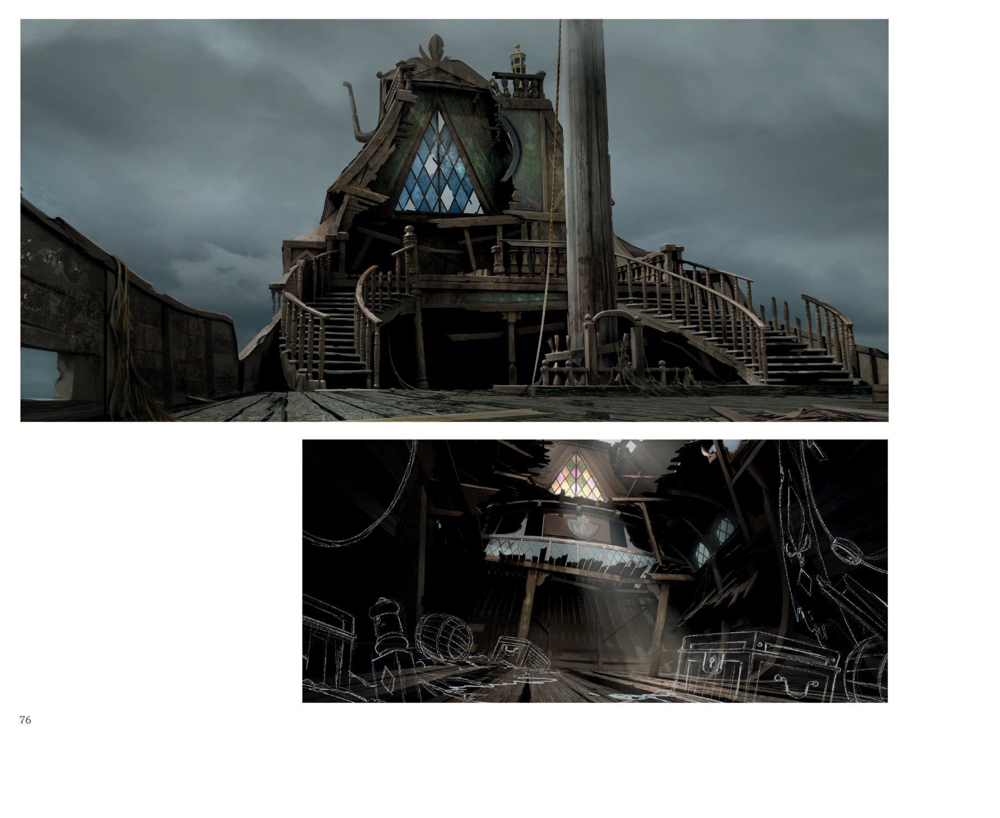
Damaged Ship（失事船只）章节（场景设定）
Frozen II 中失事船只场景的外观与内部设计——破败但仍保留贵族感的船舱，彩色玻璃窗是显著装饰元素。（F2设定集原页）
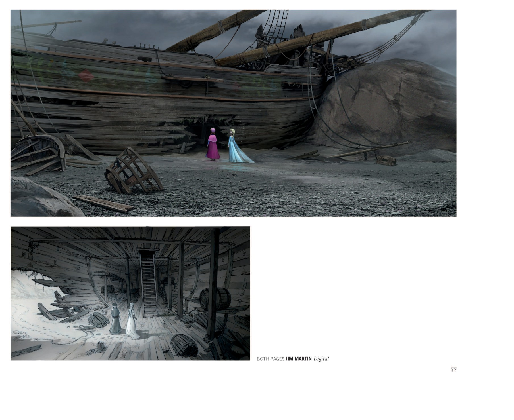
Damaged Ship 章节（场景设定）
Jim Martin 绘制的失事船场景——外观侧视图，Anna 与 Elsa 微小身影作比例尺；内部舱室展示了二人进入船内探索的关键剧情构图。（F2设定集原页）

章节待考（Character Design 部分）
1. 角色美术总监 Bill Schwab：阿格纳有一个非常突出的鼻子，虽不算大但相对脸型较长。他的发型是第一部中所戴发型的更年轻、更长版本。（F2设定集原页）
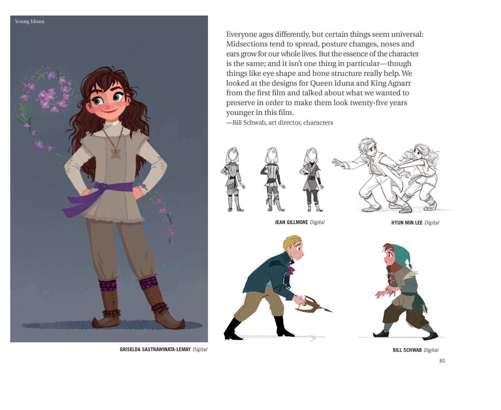
章节待考（Character Design 部分）
1. "年轻伊杜娜"（F2设定集原页）
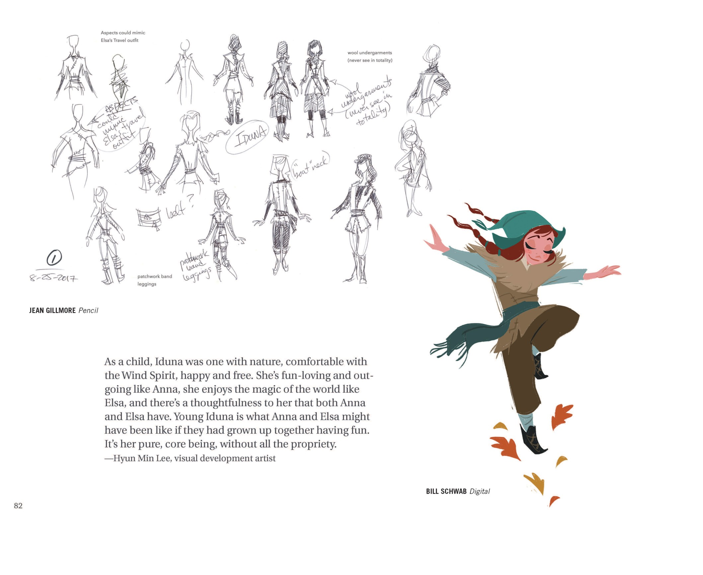
章节待考（Character Design 部分）
1. 草图批注大意：可借鉴 Elsa 旅行装的元素；羊毛内衣（不会完整看到）；腰带？拼布绑腿护腿；日期 2017-08-25。（F2设定集原页）
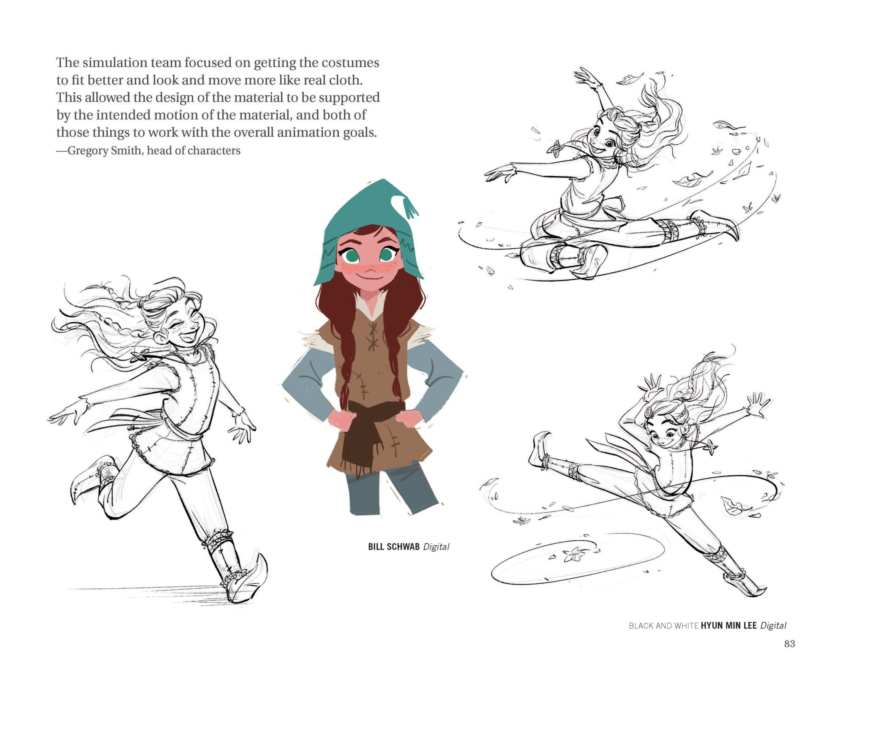
章节待考（Character Design 部分）
1. 角色部门负责人 Gregory Smith：模拟团队着重让戏服更合身，看上去、动起来都更像真正的布料。这让材质设计能由预期的材质动态来支撑，并且这两者都服务于整体动画目标。（F2设定集原页）
💡 图注说明
本页全部图版为《The Art of Frozen II》（Jessica Julius, Chronicle Books 2019）原书扫描（原图复制，未压缩），图注（中文标题 + 要点首句）逐页取自官方设定集中文笔记，点击图片可查看原尺寸扫描。
📌 本页要点
本页核心要点：①🌲 Enchanted Forest · 森林场景（p062–p073）；②⚔️ Mattias · Shipwreck · 王室（p074–p087）。来源：电影正典、官方设定集与官方小说综合梳理。